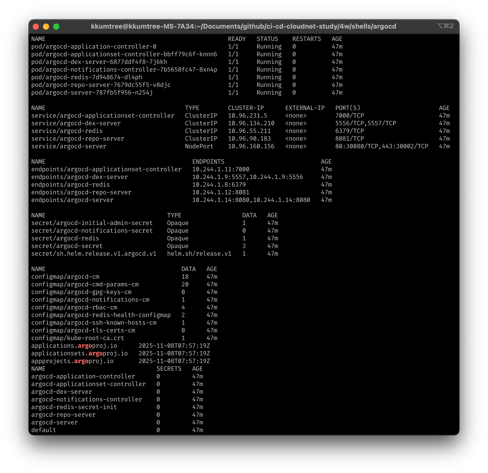
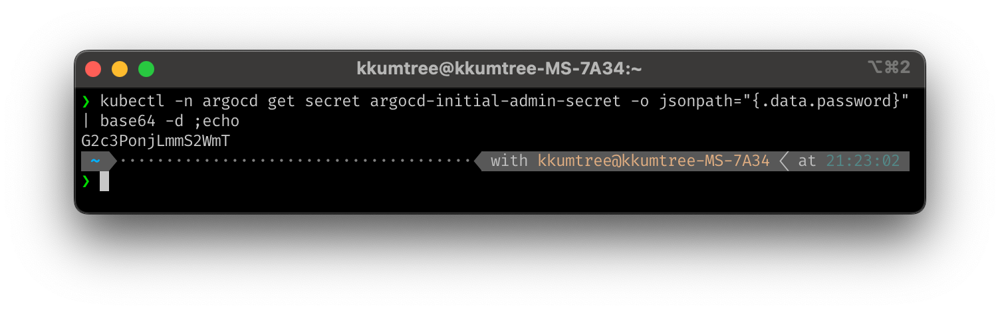
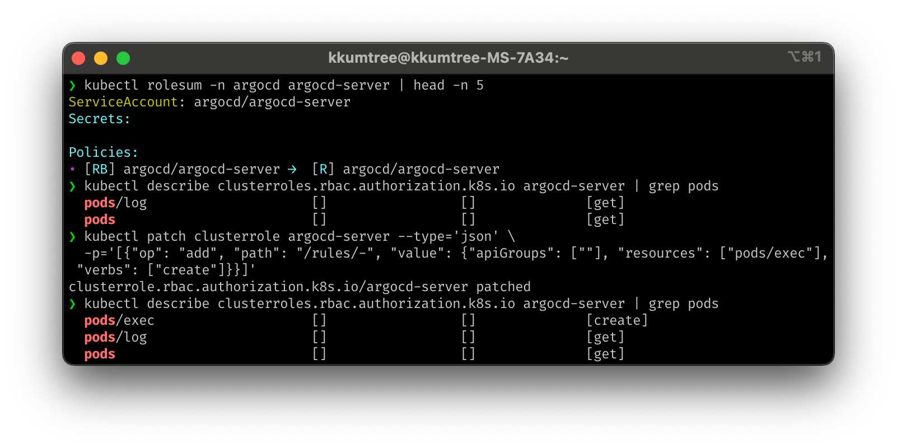
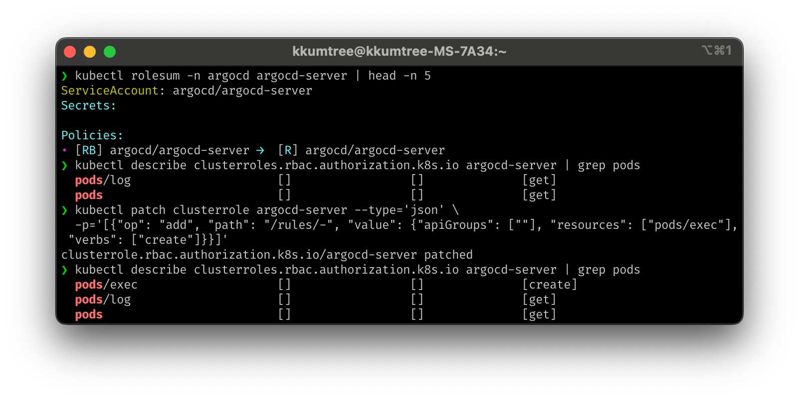
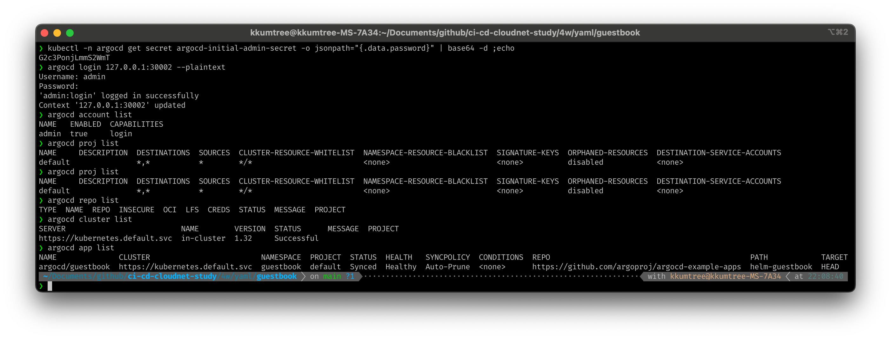
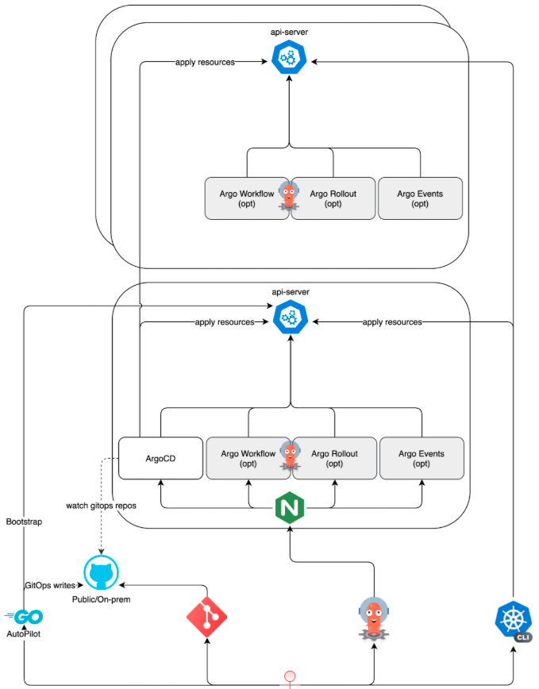

CloudNet@에서 진행하고 있는 CI/CD Study 4주차에는 ArgoCD를 다루기 시작했습니다.
Kubernetes(이하, k8s) 상에서 ArgoCD는 Controller보다는 Operator에 가까운 포지션을 갖는다고 하여,
이번 기회에 실습을 하면서 체감을 하는 것에 목적을 두었습니다.
- Controller: live state(실제 상태)와 desired state(원하는 상태)가 일치하는지 관찰 및 지속적 조정
- Operator: Controller가 k8s 내부 object에서 동작한다면, Operator는 k8s 외의 것들도 다룰 수 있음
해당 구성들은 아래 GitHub에 탑재되어 있습니다.
https://github.com/kkumtree/ci-cd-cloudnet-study 의 4w 폴더
0. 실습 준비
이전 게시물, Jenkins, git and kubernetes의 kind 및 kube-ops-view 설정과 동일하여 생략합니다.
1. 명령형/선언형 방식
- 명령형(imperative): 절차적 방식, 명령어를 순서대로 적용.
k8s에서는 kubectlcreate/replace - 선언형(declarative): 파일을 통해 생성하고, 수정 후 업데이트/동기화.
k8s에서는 kubectlapply(신규/수정 동일)
Packt 출판사의 실습코드를 통해 기본적인 동작을 살펴봅니다.
# ArgoCD-in-Practice/ch01/basic-gitops-operator
cd ch01
tree basic-gitops-operator-config # 배포할 manifest 파일
tree basic-gitops-operator # tmp 폴더를 생성하고, 클러스터에 적용할 manifest을 관리
basic-gitops-operator
go run main.go
main.go 파일은 tmp 폴더를 생성하고, 5초 주기로 해당 매니페스트를 동기화하는 소스코드임을 확인했습니다.
- 첫번째 루프에서는 nginx 배포를 위한 namespace(이하, NS)랑 deployment를 동시에 생성 시도하였으나, 해당 ns가 생성완료 되기도 전에 선언된 deployment를 생성하려다 실패.
- 5초 후 두번째 루프에서는 이전 루프에서 실패한 deployment를 마저 배포 성송.
- 이후에도 연속적으로 5초 마다 상태를 동기화를 시도하는 것을 볼 수 있었습니다.

아래 커맨드로 nginx deployment를 삭제하였어도,
오퍼레이터는 5초 후에 매니페스트와 비교하여 재배포하는 것을 확인할 수 있었습니다. deployment.apps/nginx created

# 새로운 터미널에서
kubectl get deployment,pod -n nginx
kubectl delete deployment nginx -n nginx
kubectl get deployment,pod -n nginx # 재배포된 것을 확인

이후 환경 정리를 위해, 오퍼레이터 코드를 중단하고 해당 NS를 삭제합니다.
kubectl delete ns nginx
# namespace "nginx" deleted
2. ArgoCD
ArgoCD는 k8s 환경에서 GitOps 방식의 배포를 위한 도구들 중 하나입니다.
Git repository 내에, 앞서 알아보았던 Helm 101 게시물에서 다뤘던 Helm 차트 등의 템플릿을
k8s yaml 매니페스트로 변환하여 배포하는 도구로 정리될 수 있습니다.
더불어, 앞서 명령형/선언형 방식에서 살펴본 오퍼레이터와 같이, kubectl apply 즉, 선언전 도구라는 점도 참고하면 좋습니다.
(1) Multi-Cluster 사용 시
kind를 배포하면, ~/.kube/config 파일에 단일 클러스터 정보를 얻고 관리할 수 있듯이
각 k8s 클러스터는 고유한 토큰을 통해 접근, 관리할 수 있기 때문에, ArgoCD 가 설치된 Cluster 외의 다른 Cluster에 접근할 권한을 얻어야합니다.
# e.g.
apiVersion: v1
kind: Secret
metadata:
name: cluster-credentials-dev
namespace: argocd
labels:
argocd.argoproj.io/secret-type: cluster # Label 설정에 유의
stringData:
name: dev-cluster # Argo CD 내에서 표시될 클러스터 이름
server: https://123.45.67.89:6443 # 대상 클러스터의 API 서버 주소
config: | # JSON 형태의 kubeconfig 일부. Argo CD가 인증에 사용
{
"bearerToken": "eyJhbGciOiJSUzI1NiIsImtpZCI6...", # 대상 클러스터의 ServiceAccount로부터 추출한 토큰
"tlsClientConfig": {
"insecure": false, # true일 경우 TLS 검증 비활성화 (개발용)
"caData": "LS0tLS1CRUdJTiBDRVJUSUZJQ0FURS0t..." # 클러스터 CA 인증서 (Base64 인코딩된 값)
}
}
이는 위의 YAML 형태외에도 CLI 명령어로도 가능합니다.
argocd cluster add <CONTEXT_NAME> --name <CLUSTER_ALIAS>
(2) ArgoCD Helm Chart 설치
Helm Chart의 일반적인 배포방식이며, 아래와 같습니다.
- ArgoCD를 배포할 네임스페이스 생성
- 각 Kubernetes 환경에 맞는 values.yaml 파일 작성
- 배포 후 확인
파일은 아래 경로에 있습니다.
해당 구성들은4w/shells/argocd폴더에 탑재되어 있습니다.
# pwd
# # /home/kkumtree/Documents/github/ci-cd-cloudnet-study/4w/shells/argocd
# ls
# # argocd-values.yaml deploy-chart.sh
./deploy-chart.sh

각 구성요소를 확인해보겠습니다.
kubectl get pod,svc,ep,secret,cm -n argocd
kubectl get crd | grep argo
kubectl get appproject -n argocd -o yaml
kubectl get sa -n argocd

권한도 보겠습니다.
아래 커맨드를 위해서 krew 플러그인 매니저가 설치되어 있어야 합니다.
4w/shells/krew/install-krew-bash-zsh.sh스크립트로도 설치할 수 있습니다.
# kubectl krew install rolesum
kubectl rolesum -k User system:kube-proxy
kubectl rolesum -k Group system:masters

Role Binding / Cluster Role Binding 도 확인해봅니다
kubectl rolesum -n argocd argocd-server
# kubectl rolesum -n argocd argocd-application-controller
# kubectl rolesum -n argocd argocd-applicationset-controller
# kubectl rolesum -n argocd argocd-repo-server

ArgoCD 최초 암호 확인은 아래와 같이 합니다.
kubectl -n argocd get secret argocd-initial-admin-secret -o jsonpath="{.data.password}" | base64 -d ;echo

(3) Testing with sample app
샘플 어플리케이션 guestbook을 배포 후, ArgoCD 대시보드를 통해 변화를 관찰해봅니다.
# 4w/yaml/guestbook 폴더로 이동
kubectl apply -f guestbook.yaml

해당 서비스가 kind 클러스터의 노출된 30003 포트로 접근 가능하도록 시도해보겠습니다.
kubectl get svc -n guestbook
kubectl patch svc -n guestbook guestbook-helm-guestbook -p '{"spec":{"type":"NodePort","ports":[{"port":80,"targetPort":80,"nodePort":30003}]}}'
kubectl get svc -n guestbook
kubectl patch svc -n guestbook guestbook-helm-guestbook -p '{"spec":{"type":"NodePort","ports":[{"port":80,"targetPort":80,"nodePort":30003}]}}'
kubectl get svc -n guestbook
변화가 없는 것을 확인할 수 있습니다.

왜냐하면, ArgoCD의 Self healing으로 동기화되고 있기 때문입니다.
이를 바꾸기위해, 웹 콘솔에서 Self healing을 비활성화하고 사용하면 됩니다.
(4) ArgoCD 웹 콘솔에서 Pod Terminal 사용 활성화
Jenkins의 경우에는 웹 콘솔에서 Pod에 접속할 터미널이 없었던 것으로 알고있는데,
RBAC을 포함한 활성화 설정으로, 웹 콘솔에서 현재 배포된 Pod의 내부에 접근할 수 있습니다.
# (ArgoCD Pod) exec 기능 활성화
kubectl get configmap argocd-cm -n argocd -o yaml | grep exec.enabled
kubectl patch configmap argocd-cm -n argocd --type merge -p '{"data":{"exec.enabled":"true"}}'
kubectl get configmap argocd-cm -n argocd -o yaml | grep exec.enabled # 활성화 확인
# (RBAC) CR에 pods/exec 생성권한 추가
kubectl rolesum -n argocd argocd-server | head -n 5 # argocd-server의 Role Binding 확인
kubectl describe clusterroles.rbac.authorization.k8s.io argocd-server | grep pods # pods/exec 없음 확인
kubectl patch clusterrole argocd-server --type='json' \
-p='[{"op": "add", "path": "/rules/-", "value": {"apiGroups": [""], "resources": ["pods/exec"], "verbs": ["create"]}}]'
kubectl describe clusterroles.rbac.authorization.k8s.io argocd-server | grep pods # pods/exec create 확인
 

이후에 웹 콘솔로 접속 시, Pod에 대해 웹 Terminal로 접근이 가능한 점을 확인할 수 있습니다.

(5) ArgoCD CLI
유사시, 커맨드라인으로 ArgoCD와 API 통신을 하기 위해 ArgoCD CLI를 설치 후 사용해봅니다.
(Linux/Curl방식: Download With Curl)
초기 비밀번호로 사용하는 것은 권장되는 방법은 아니나
원격으로 해당 클러스터에 붙어서 실습 중이었기에, 편의 상 아래와 같이 진행했습니다.
kubectl -n argocd get secret argocd-initial-admin-secret -o jsonpath="{.data.password}" | base64 -d ;echo
argocd login 127.0.0.1:30002 --plaintext
argocd account list
argocd proj list
argocd repo list
argocd cluster list
argocd app list

3. ArgoCD Autopilot
https://github.com/argoproj-labs/argocd-autopilot
Argo CD Autopilot Introduction/Codefresh
Jenkins가 되었든 ArgoCD가 되었든, 자기 자신을 자동으로 sync 관리 하기가 어려운 경우가 있습니다.
이번에는 ArgoCD Autopilot을 가볍에 알아보겠습니다.

제안 문서도 참고하여 확인 후 살펴봤을 때, Autopilot의 목적은 ArgoCD를 Bootstrap화 하는 것으로 이해했습니다.
배포하면서 Argo CD에 대한 템플릿도 git 레포에 업로드한 후, 이 또한 ArgoCD가 조회하며 sync를 맞추는 것으로 파악됩니다.

다양한 제안이 있는 것으로 보이며, 앞으로도 업데이트 될 사안이 많아 보였습니다.

kkumtree
Source code on GitHub
© 2025 kkumtree and contributors All rights reserved.
Licensed under
CC BY-NC-ND 4.0